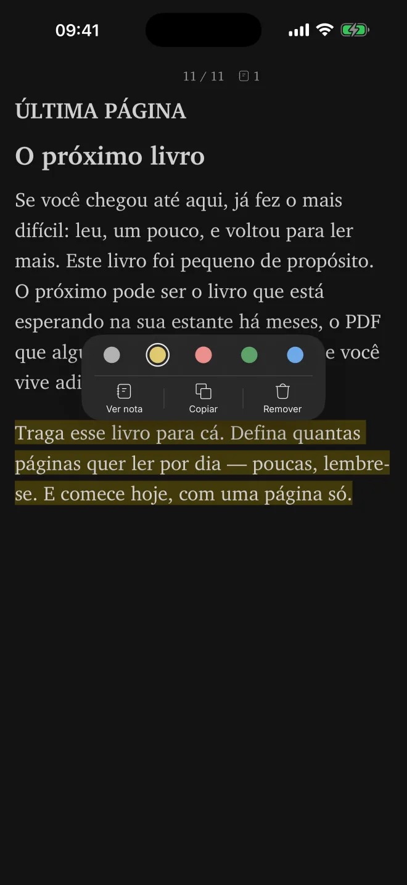

Leia 3 páginas.
Depois, o Instagram.
O Muro bloqueia os apps que te distraem até você ler as páginas do dia. Leu, liberou.
Em breve na App Storepara iPhone · grátis
 ↓ um dia com o Muro
↓ um dia com o Muro
Escolha o que te distrai.
Instagram, TikTok, YouTube: os apps que você escolher na lista do iPhone ficam guardados. O Muro nunca sabe quais são.

Precisa de um antes? Peça uma pausa.
15 minutos, 30 ou 1 hora. Quando a pausa acaba, eles voltam a esperar.

Leia. Cada página conta.
Uma página conta depois do tempo de ser lida. Folhear não vale. O Foco enche a cada uma: 1, 2, 3.

Bateu a meta. Os apps voltam.
E a ofensiva cresce: basta uma página por dia para ela continuar acesa.

Grife o que importa.
Cinco cores e uma nota em cada trecho. Junte tudo em coleções.

Lembre do que leu.
Algumas notas voltam numa revisão de um minuto.

Veja quem leu mais.
Cada página vale XP na Liga do mês e nos grupos com os amigos.